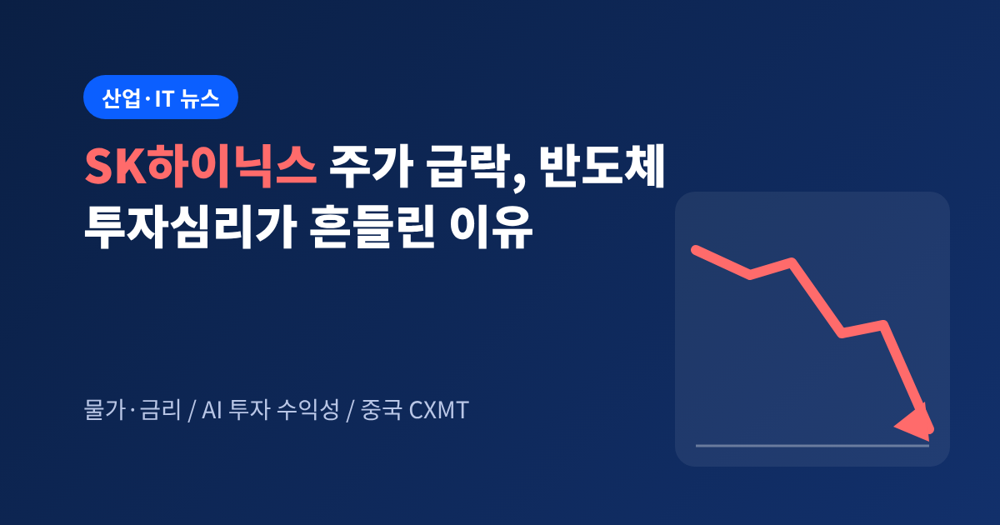
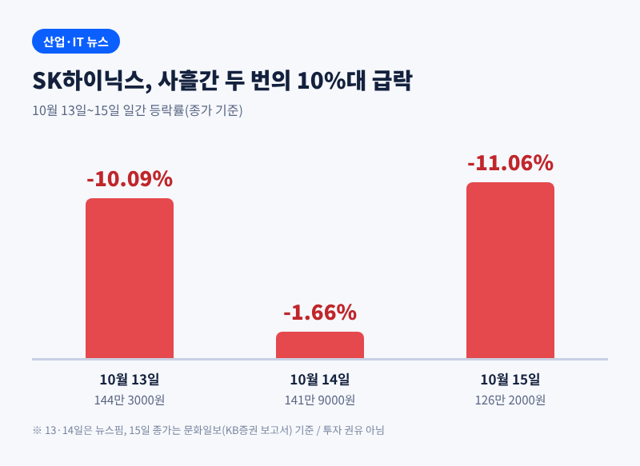
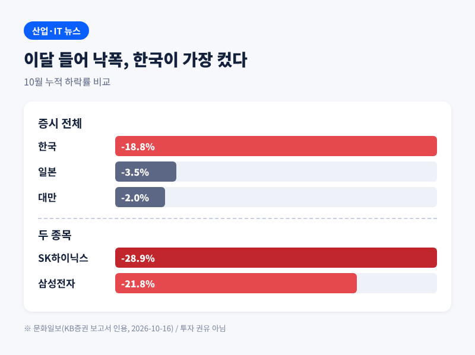
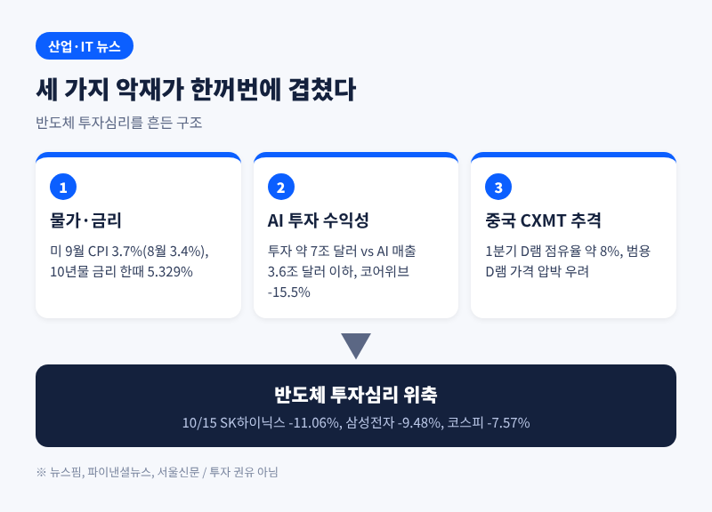
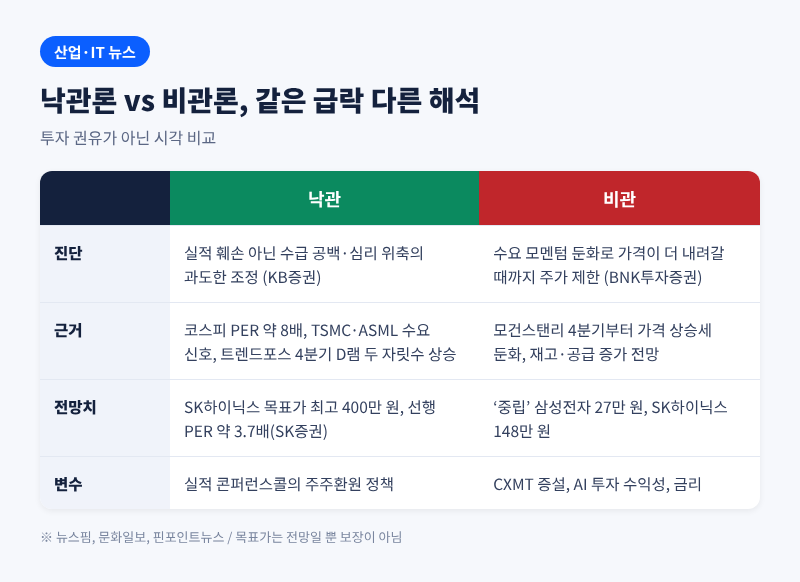
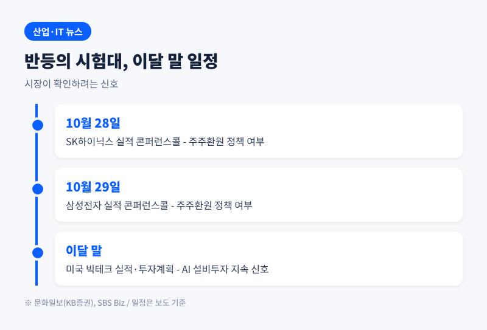

SK하이닉스 주가 급락, 반도체 투자심리가 흔들린 세 가지 이유

이번 글에서는 10월 13일부터 15일까지 이어진 SK하이닉스와 삼성전자의 급락, 그리고 반도체 투자심리가 흔들린 배경을 정리해 보겠습니다. 15일 하루에만 SK하이닉스는 11.06%, 삼성전자는 9.48% 떨어졌고 코스피는 7.57% 급락한 5554.22로 마감했습니다.
핵심은 세 가지입니다. 미국 물가와 금리, AI 투자 수익성에 대한 의구심, 그리고 중국 CXMT의 추격입니다. 한편에서는 실적이 아니라 심리가 만든 과도한 조정이라는 진단도 나옵니다.
이 글은 시장 상황을 정리한 해설이며 특정 종목의 매수·매도를 권하는 투자 권유가 아닙니다. 투자 판단과 책임은 투자자 본인에게 있습니다.
■ 무슨 일이 있었나: 사흘 만에 두 번의 10% 급락
SK하이닉스는 10월 13일 10.09% 내린 144만 3000원으로 마감했습니다. 14일에는 1.66% 더 내려 141만 9000원이 됐습니다. 그리고 15일, 장중 한때 10.22% 급락해 127만 원대로 밀렸습니다. 120만 원 선 근처까지 내려간 것은 7월 말 이후 약 두 달 반 만입니다.
15일 종가 기준으로 SK하이닉스는 126만 2000원(-11.06%), 삼성전자는 21만 원(-9.48%)이었습니다. 이달 들어 낙폭은 삼성전자 21.8%, SK하이닉스 28.9%에 이릅니다. 코스피는 7거래일 연속 내렸고, 이 기간 시가총액은 약 1200조 원 줄었습니다.

낙폭이 한국에 유독 컸다는 점도 눈에 띕니다. KB증권이 정리한 이달 증시 하락률은 한국 18.8%, 일본 3.5%, 대만 2.0%입니다. 같은 AI 반도체 흐름 위에 있으면서도 한국만 더 크게 흔들린 셈입니다.

수급도 뒷받침하지 못했습니다. 10월 1일부터 15일까지 외국인은 삼성전자 약 4조 8156억 원, SK하이닉스 약 9조 2902억 원어치를 순매도했습니다. 개인도 물러서고 있습니다. SBS Biz 보도에 따르면 삼성전자와 SK하이닉스의 합산 개인 매수액은 3개월 새 76.5% 급감했고, 20대 매수 참여자 수는 55.8% 줄었습니다.
■ 왜 중요한가: 시장의 무게추가 흔들렸습니다
두 종목은 코스피의 무게추입니다. 이 둘이 한꺼번에 10% 안팎 빠지면 지수 전체가 끌려갑니다. 15일의 코스피 7%대 하락이 그 사례입니다.
SK하이닉스에게 급락 자체는 낯선 일이 아닙니다. 뉴스핌에 따르면 올해 1월 2일 이후 하루 9% 넘게 떨어진 날이 13번이고, 그중 8번이 하반기입니다. 7월에만 5번이었습니다. 다만 과거에는 반등도 빨랐습니다. 6월 5일 -9.92% 뒤 이틀 만에 +15.91%, 6월 23일 -12.47% 뒤 +13.06%, 7월 13일 -15.37% 뒤 +8.83%였습니다. 그래서 시장에는 '급락 뒤에는 반등한다'는 공식이 있었습니다.
이번에는 그 공식이 통하지 않았습니다. 악재의 성격이 일시적 충격이 아니라 금리, 투자 수익성, 경쟁 구도처럼 구조적 변수에 걸려 있기 때문입니다. 뉴스핌 기사 제목이 '반등 공식 믿었는데'인 이유입니다.
■ 배경 첫째: 예상보다 높은 물가와 금리
미국 9월 소비자물가지수(CPI)는 전년 대비 3.7% 올라 시장 예상을 웃돌았습니다. 8월 3.4%에서 오른 수치입니다. 뉴스핌에 따르면 미국 10년물 국채금리는 한때 5.329%까지 올랐습니다. LS증권 김윤정 연구원은 물가 상승이 에너지를 넘어 번지고 있다는 점을 짚었습니다.
금리가 오르면 두 군데에서 타격이 옵니다. 하나는 성장주의 가치 평가입니다. 먼 미래의 이익을 현재 가치로 깎는 할인율이 높아지기 때문입니다. 다른 하나는 AI 인프라 투자의 자금 조달입니다. 데이터센터는 빚으로 짓는 경우가 많습니다. Benzinga Korea는 골드만삭스 CEO가 10년물 금리가 7월 초 이후 약 75bp 올랐고 모든 데이터센터 프로젝트가 유리한 조건으로 자금을 구하긴 어려울 것이라 경고했다고 전했습니다.
■ 배경 둘째: AI 투자는 돈이 되는가
메모리 업체의 호황은 AI 서버 투자에서 나옵니다. 그래서 AI 투자의 수익성은 곧 반도체의 수요 전망입니다.
키움증권 한지영 연구원은 가트너 추정치를 인용해 2026~2030년 AI 인프라 투자 규모를 약 7조 달러로 봤습니다. 반면 데이터센터 AI 매출은 3조 6000억 달러 이하입니다. 투자가 매출을 크게 앞서는 구조라, 자산 손상 위험이 거론됩니다.
미국 시장에서는 이 우려가 숫자로 나타났습니다. 데이터센터 확장을 위해 많이 빌린 코어위브가 15.5% 급락했고, 회사채 수익률이 급등했습니다. 필라델피아 반도체지수는 4.30% 내렸습니다. 마이크론 -3.88%, 샌디스크 -5.97%, 인텔 -3.20%, SK하이닉스 ADR -4.02%였습니다. 올해 70% 넘게 올랐던 반도체 ETF(SOXX)는 7거래일 연속 하락했다고 Benzinga Korea는 전합니다.

■ 배경 셋째: 중국 CXMT의 추격과 국내 공급 계획
중국 D램 업체 CXMT는 7월 상장 과정에서 최대 666억 위안, 약 14조 6000억 원을 조달하는 것으로 보도됐습니다. 중국 반도체 기업 사상 최대 규모입니다. 트렌드포스에 따르면 올해 1분기 CXMT의 세계 D램 점유율은 약 8%로 1년 전의 거의 두 배입니다.
여기서 구분이 필요합니다. 뉴스핌은 CXMT의 증설이 범용 D램 가격에 하방 압력을 줄 수는 있어도 SK하이닉스의 HBM 입지를 직접 훼손하지는 않는다고 단서를 붙였습니다. 서울신문 역시 업계 시각으로 HBM 기술 격차는 단기간에 좁히기 어렵다고 전했습니다. 위협의 대상이 '전체 메모리'가 아니라 '범용 D램 가격'이라는 이야기입니다.
국내 요인도 거론됩니다. 6월 29일 발표된 '호남 반도체 800조 원' 투자계획입니다. 핀포인트뉴스에 따르면 발표일 종가 대비 10월 15일 종가는 삼성전자가 35.0%, SK하이닉스가 52.0% 낮습니다. DBS는 5년간 D램 생산능력을 두 배로 늘리는 계획이 중장기 공급과잉을 부를 수 있다고 봤고, 우드맥켄지는 2030년 호남 클러스터 전력 수요가 발전능력을 약 2.3GW 넘어설 수 있다고 전망했습니다. 다만 이 기사도 투자계획과 주가 하락의 인과관계를 입증하지는 못한다고 선을 그었습니다. 여러 요인이 겹친 결과로 보는 편이 정확합니다.
■ 쟁점: 심리 탓인가, 사이클 정점의 신호인가
시장의 시각은 갈립니다.
낙관론의 논거는 이렇습니다. KB증권 김동원 리서치본부장은 16일 보고서에서 이번 급락을 실적 훼손이 아닌 수급 공백과 심리 위축에 따른 과도한 조정으로 진단했습니다. 코스피 PER이 2분기 확정 실적 기준 약 8배로, 2008년 금융위기와 2020년 코로나 때와 비슷한 저평가 구간이라는 것입니다. TSMC가 3분기 실적에서 AI 반도체 수요 둔화 징후가 없다고 밝혔고, ASML도 고객사의 중장기 수요 전망이 높아지고 있다고 언급했습니다. 트렌드포스는 4분기 D램 가격이 두 자릿수 오를 것으로 봅니다. 뉴스핌에 따르면 SK하이닉스 목표가는 SK증권과 IBK투자증권이 400만 원, 유진투자증권 370만 원, 하나증권 360만 원 등 현재가의 두 배를 훌쩍 넘습니다.
비관론도 가볍지 않습니다. BNK투자증권 이민희 연구원은 삼성전자와 SK하이닉스를 '중립'으로 보고 목표가를 각각 27만 원과 148만 원으로 제시했습니다. 메모리 수요 모멘텀이 둔화되고 가격이 더 내려갈 때까지 주가가 눌릴 것이라는 시각입니다. 모건스탠리도 8월 보고서에서 4분기부터 메모리 가격 상승세가 둔화하고 재고와 공급이 늘 것이라고 내다봤습니다. 같은 4분기를 두고 트렌드포스와 모건스탠리의 전망이 엇갈리는 셈입니다.

한 가지는 분명합니다. 급락의 크기만으로 방향을 단정하기는 어렵다는 점입니다. 목표가는 증권사의 전망일 뿐 보장이 아닙니다. 올해 하루 9% 넘게 빠진 날이 13번이나 된다는 사실은 이 종목의 변동성이 그만큼 크다는 뜻이기도 합니다.
■ 전망: 앞으로 확인할 일정
당장의 시험대는 이달 말입니다. SK하이닉스는 28일, 삼성전자는 29일 실적 콘퍼런스콜을 엽니다. KB증권은 여기서 나올 주주환원 정책이 반등 요인이 될 수 있다고 봅니다. 미국 빅테크의 실적과 투자계획 발표도 변수로 꼽힙니다. AI 설비투자를 줄이지 않는다는 신호가 나오면 심리가 풀릴 수 있고, 반대라면 우려가 굳어질 수 있습니다.
환율도 눈여겨볼 지표입니다. 15일 원달러 환율은 1,346원 안팎이었습니다. 물가와 금리가 안정되지 않으면 외국인 순매도는 이어질 수 있습니다.

정리하면 이렇습니다. 이번 급락은 어느 한 가지 악재의 결과가 아니라, 금리와 AI 투자 수익성과 경쟁 구도에 대한 불안이 한꺼번에 겹친 결과입니다. 실적 전망은 아직 견조하다는 평가와 사이클이 꺾일 수 있다는 경고가 맞서 있습니다.
"주가는 심리가 먼저 움직이고, 숫자는 나중에 답한다."
숫자가 어느 편을 들어줄지는 이달 말 실적 발표가 한 번 보여줄 것입니다. 그때까지는 낙관과 비관 어느 쪽에도 쉽게 기대지 않는 것이 좋겠습니다. 이 글은 투자 권유가 아니며, 인용한 수치는 각 언론과 증권사 자료에 근거한 것입니다.